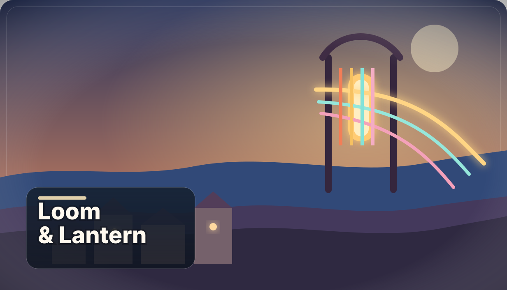
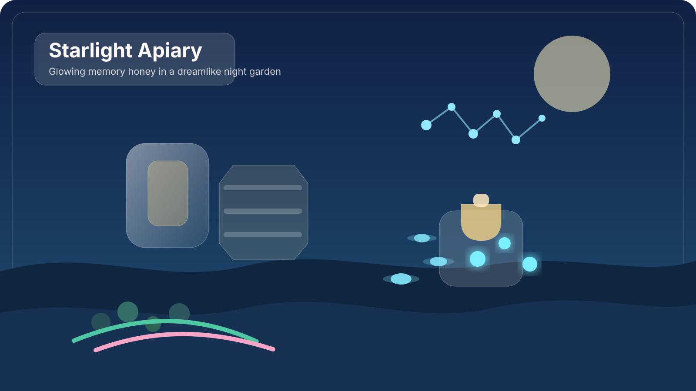
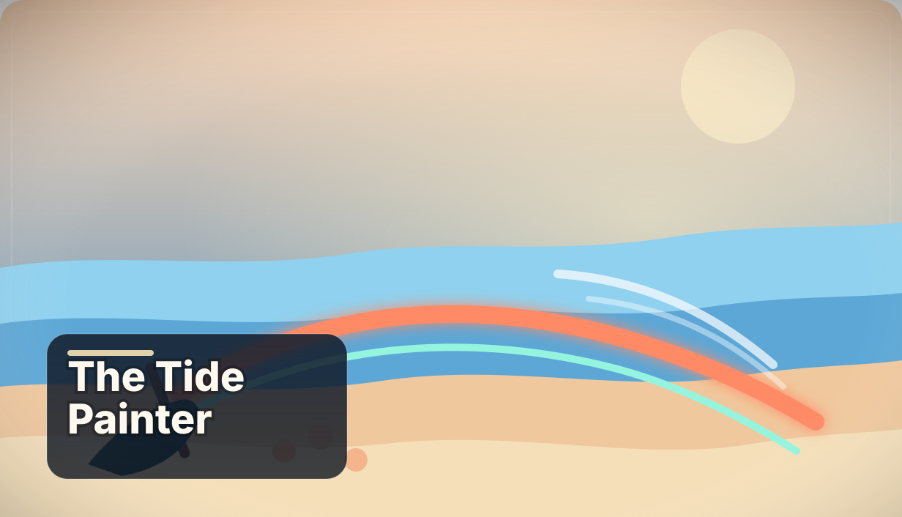
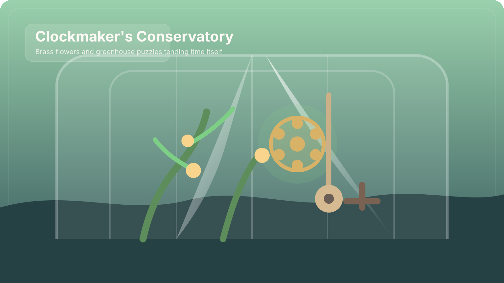
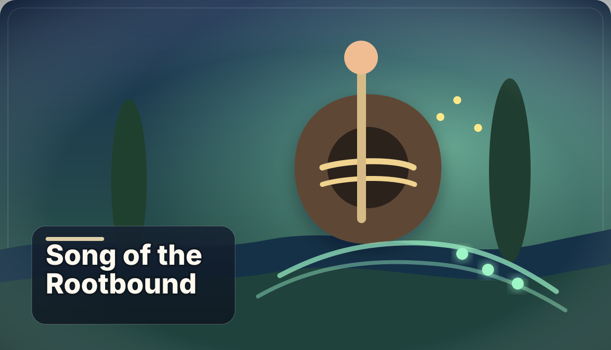
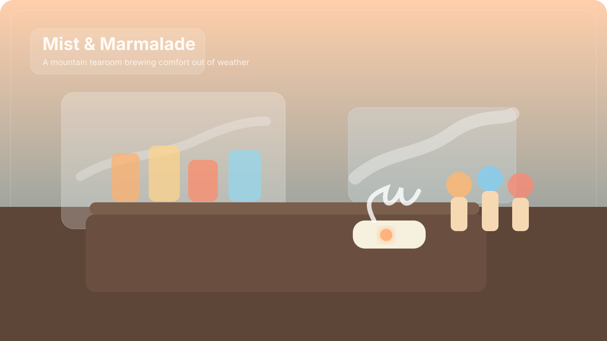
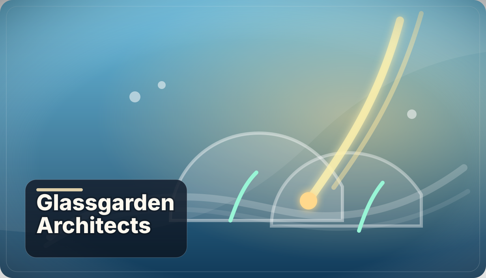
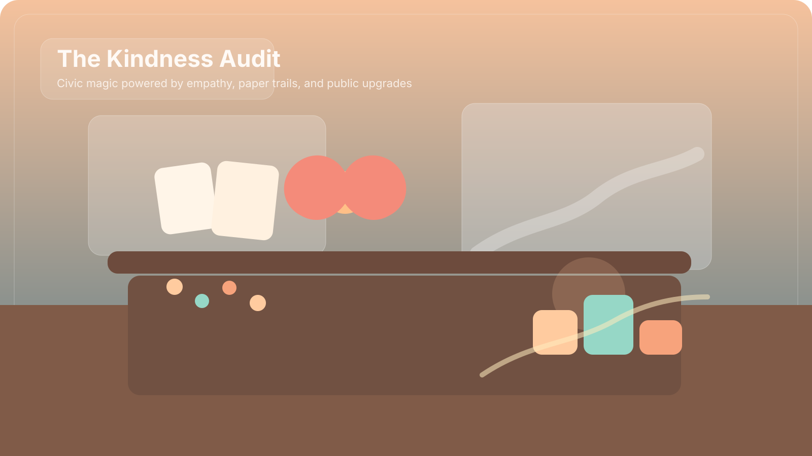
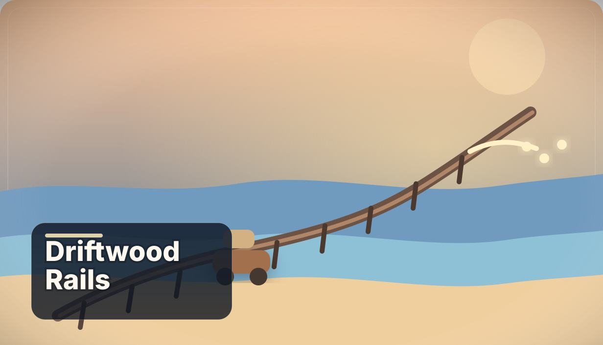
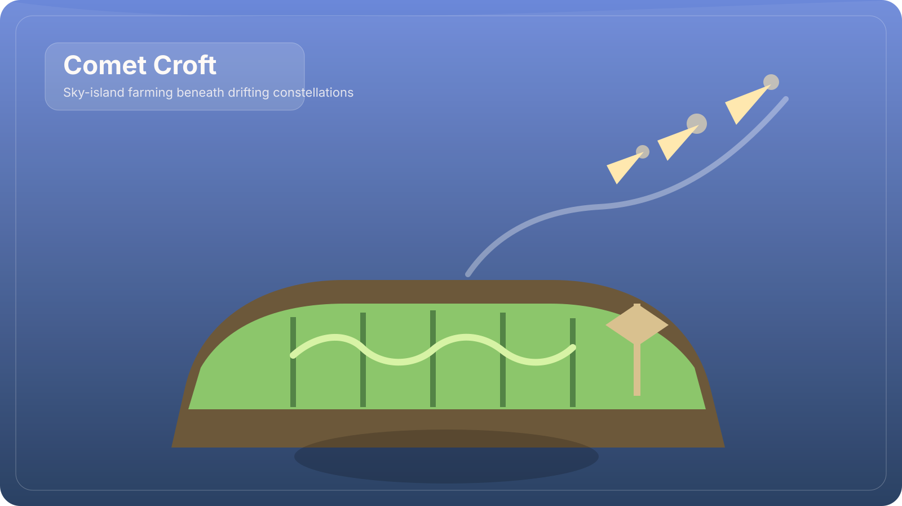

Wholesome 2D pitches built for Steam-first discovery.
Ten new commercially readable concepts, each with a visual identity strong enough for capsule art, screenshots, and a short trailer.
Every pitch in this deck stays non-violent, kind, and easy to understand from a store page. The art mockups on the right show the target mood, palette, and silhouette language for each game.

Loom & Lantern
Restore a forgotten textile village by weaving patterns that literally mend roofs, bridges, and strained relationships.
Core Loop
Gather dyes, thread motifs on a loom grid, then apply finished tapestries to repair spaces and unlock routes through the valley.
Emotional Hook
The player fixes beauty with their hands and sees the town soften into color one careful repair at a time.
- Store page promise: tactile weaving puzzles that reshape the environment in immediately visible ways.
- Art advantage: fabric folds, embroidery, and lantern light give screenshots a distinctive handcrafted identity.
- Expansion path: new districts, pattern families, and character commissions can deepen the fantasy without changing the wholesome tone.
Starlight Apiary
Tend glowing bees whose honey stores memories, then blend each batch to comfort townspeople who are afraid of forgetting.
Core Loop
Plant night gardens, guide hive routes, harvest memory honey, and mix jars that match character stories and seasonal requests.
Emotional Hook
Nostalgia feels sweet rather than sad, with every jar preserving something worth holding onto.
- Store page promise: build dreamlike gardens that change bee behavior, flavor notes, and story outcomes.
- Art advantage: glowing honey trails and stained-glass hives read instantly in thumbnails and trailer cuts.
- Expansion path: new flowers, bee species, and recipes create endless soft progression without pressure.

The Tide Painter
Paint symbols into wet sand each dawn so the returning tide remembers safe paths for sea life, tide pools, and beachside dreams.
Core Loop
Sketch routes, barriers, and tide symbols on the shore, then watch water follow those lines to solve ecosystem puzzles and open new areas.
Emotional Hook
The player feels in tune with nature, guiding it gently instead of controlling it harshly.
- Store page promise: the beach becomes a living puzzle board where your brushwork changes the entire shoreline.
- Art advantage: footprints, painted glyphs, and rolling pastel waves make motion readable in static screenshots.
- Expansion path: new beaches, weather conditions, and creatures broaden the sandbox while staying calm and intuitive.

Clockmaker's Conservatory
Repair whimsical clock-plants inside a greenhouse where time grows like fruit and every tuned mechanism nudges the season forward.
Core Loop
Diagnose time knots, place gears into plant machinery, sync pendulum vines, and harvest temporal blooms to heal new wings of the estate.
Emotional Hook
Time becomes something to tend with patience, not something to race against or fear.
- Store page promise: satisfying gear logic puzzles framed by soothing greenhouse stewardship instead of punishing timers.
- Art advantage: brass petals, glass ceilings, and sun-dial shadows create premium-looking stills with clear thematic identity.
- Expansion path: new plant-clock species and estates keep the mechanic fresh while preserving readability.

Song of the Rootbound
Travel with a lute through a fractured forest and teach buried roots to harmonize until the whole woodland remembers one song again.
Core Loop
Find resonant stones, layer melodies through root networks, open paths with harmony puzzles, and collect folktales as playable motifs.
Emotional Hook
Belonging is expressed through shared music, making progress feel communal and uplifting instead of solitary.
- Store page promise: approachable music puzzles with no fail state, centered on listening and layering rather than performance mastery.
- Art advantage: glowing root staves and bark-made instruments create a highly ownable visual language.
- Expansion path: new biomes can add instrument families, rhythms, and folk motifs without losing the core pitch.

Mist & Marmalade
Run a foggy mountain tearoom where weather itself becomes an ingredient in jam, tea foam, and the mood of every guest who walks in.
Core Loop
Forecast mist patterns, collect atmospheric essences, brew blends, decorate the cafe, and watch new travelers become regulars.
Emotional Hook
The space itself feels like a refuge, and the player becomes the reason strangers leave warmer than they arrived.
- Store page promise: recipes that blend herbs, weather, and story mood into one easy-to-understand fantasy.
- Art advantage: steaming cups, fogged windows, and glowing preserve jars make every screenshot cozy on contact.
- Expansion path: new floors, weather patterns, and guest arcs sustain the game with naturally collectible content.

Glassgarden Architects
Blow glass habitats underwater and bend sunlight through them to grow a shy fish-folk city back into a thriving neighborhood.
Core Loop
Sculpt domes and arches, place them to refract sunlight, attract residents and species, then grow each district through beauty and shelter.
Emotional Hook
The player creates safety through art, making every build feel generous as well as beautiful.
- Store page promise: building and puzzle solving merge through readable beams of color and reactive biodiversity.
- Art advantage: caustic light, rainbow prisms, and bubble-edged architecture look premium in screenshots.
- Expansion path: new districts, trims, flora, and sea life can continuously broaden the sandbox.

The Kindness Audit
Play a rookie inspector who measures good deeds, resolves community mismatches, and turns small kindness into better public spaces.
Core Loop
Interview townspeople, compare ledgers of favors, resolve cases through empathy, and spend recovered goodwill on parks, libraries, and markets.
Emotional Hook
The player sees proof that quiet generosity compounds into visible change across the whole town.
- Store page promise: cozy mystery structure without cruelty, powered by fair questions and satisfying public upgrades.
- Art advantage: stamps, seals, glowing tokens, and lively town projects make the concept visually legible in one frame.
- Expansion path: new districts and policy choices give room for replayable, low-stakes case design.

Driftwood Rails
Lay temporary rails across tidal flats so your tiny handcar can haul found treasures to crafters preparing the season's shoreline festival.
Core Loop
Scout the coast at low tide, snap together track segments, haul driftwood and salvage, then fulfill festival build requests that transform the shoreline.
Emotional Hook
Improvised travel and communal celebration make every route feel like preparation for something joyful.
- Store page promise: scenic logistics with playful rails and visible community payoff rather than hard efficiency pressure.
- Art advantage: mirror-sky puddles, salt sparkle, and bunting-covered rails create highly photographable scenes.
- Expansion path: new tides, materials, and festivals easily slot into the same peaceful loop.

Comet Croft
Farm on a drifting sky-island that sails through meteor showers of seeds, with crops blooming differently under each constellation.
Core Loop
Steer the croft along star lanes, plant in soil patterns, hybridize star crops, and trade with passing sky neighbors for rare seeds and upgrades.
Emotional Hook
The game offers rooted comfort inside a moving home, balancing awe and domestic warmth in one clear fantasy.
- Store page promise: farming gets a fresh silhouette through sky travel, constellation rules, and meteor-seed harvests.
- Art advantage: glowing fields against open sky make the game instantly readable on a Steam capsule or store banner.
- Expansion path: new constellations, islands, and airborne visitors add content without breaking the cozy structure.

Fast shortlist lens
Use this last slide to compare which pitch best balances fantasy, clarity, and ownable art direction for a first Steam page.
- If you want the safest broad-audience cozy pitch, start with Mist & Marmalade or Loom & Lantern.
- If you want the most premium-looking screenshots, start with Glassgarden Architects or Starlight Apiary.
- If you want the most emotionally resonant and unusual concept, start with Song of the Rootbound or The Tide Painter.